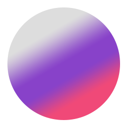

Koju paletu boja želiš?

DSLR je pojam koji je postao sinonim za digitalne fotoaparate, ali digitalna refleksna kamera s jednom lećom (značajna po tome što omogućuje izmjenjive leće na istom tijelu fotoaparata) samo je jedna vrsta digitalnog fotoaparata.
DSLR fotoaparati vam omogućuju kombiniranje kućišta fotoaparata s nastavcima za objektive po vašem izboru, bilo da se radi o ribljem oku ili zoom objektivu.
Možete nabaviti različite vrste leća koje služe različitim svrhama i daju vam drugačiji izgled, objašnjava fotografkinja Ivy Chen:
DSLR-ovi su mnogo svestraniji u tom pogledu.DSLR-i su izdržljivi, svestrani u svojoj sposobnosti uparivanja s brojnim objektivima i priključcima, imaju dugo trajanje baterije i daju vam veću brzinu snimanja uz bolje automatsko fokusiranje — to su razlozi zašto fotografi vole ovu vrstu fotoaparata. Najbolji DSLR za vas ovisit će o objektu koji namjeravate snimati i situaciji u kojoj namjeravate snimati. Različiti modeli DSLR-a i objektivi nude različite prednosti, ali s tim znanjem, potraga za pravim fotoaparatom za vas trebala bi biti lakša.